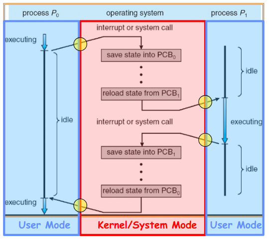

Threads and Processes
Table of Contents
1. Multithreaded Programs
Running an executable initially creates a process with one thread in its own address space. Once the process starts, it is possible to issue system calls to create new threads. Since these new threads are part of the process, they share the same address space as the process.
Each thread shares the heap, global variables, and code with the process. Howevever, each thread has its own stack within the address space. The state private to each thread is kept in its thread control block (TCB). This includes information such as the CPU registers and its execution stack.
We can use the pthreads library to create threads:
1.1. int pthread_create(pthread_t *thread, const pthread_attr_t *attr, void *(*start_routine)(void *), void *arg);
The thread is created executing start_routine with arg as its sole argument. Returning implicitly calls pthread_exit.
1.2. void pthread_exit(void *value_ptr);
Terminates the thread and makes value_ptr available to any successful join.
1.3. int pthread_join(pthread_t thread, void **value_ptr);
Suspends execution of the calling thread until the target thread terminates. On return with a non-NULL value_ptr, the value passed to pthread_exit by the terminating thread is made available in the location referenced by value_ptr.
2. Multiprocess Programs
The kernel represents each process using a process control block (PCB). This includes information on status (running, ready, blocked), space for register state, the process ID, execution time, etc.
The kernel scheduler then maintains a data structure containing these PCBs. It is then up to the scheduler to make policy decisions regarding the allocation of processors to each process:

2.1. Managing Processes
Processes are created and managed by processes. But if processes are created by other processes, how does the first process start?
The first process is started by the kernel, often called the INIT process. After the INIT process is started, all other processes are created by other processes. This is done by a set of system calls:
exit: terminate a processfork: copy the current processexec: change the program being run by the current processwait: wait for a child process to finishkill: send a signal to another processsigaction: set handlers for signals
3. Kernel Mode Transfers
For security reasons, processors use dual mode operation: some operations must be run in a protected kernel mode and not in user mode. Therefore, it is necessary from time to time to transfer into kernel mode, for example to create threads and interact with I/O.
Since the kernel mode is powerful, we need carefully controlled transitions between user mode and kernel mode. There are three ways user mode can transfer into kernel mode, with the primary one being the system call interface: this is the primary way the user mode interacts with the kernel mode. The two other methods are interrupts and traps (or exceptions).
Interrupts are external asynchronous events (e.g. timer or I/O) that trigger a mode switch. Traps are internal synchronous events (e.g. segfault, divide by zero) that trigger a mode switch. All three methods are known as unprogrammed control transfer: the process doesn’t identify the specific address but rather an index into the interrupt vector table (IVT) which contains the address and properties of each interrupt handler.
3.1. System Calls
The key here is to vector through pre-defined entry points which we know to be safe: this is implemented via a table that maps a system call number to a handler. A system call generally follows this process:
- Get user arguments from registers, or copy arguments from user stack onto kernel stack.
- Validate the arguments to protect the kernel from errors in user code.
- Dispatch to the handler and do the work.
- Store return value in registers, or copy results back into user memory.
3.2. Interrupts
Similar to system calls, interrupts vector into a interrupt vector table (IVT) which contains a list of pre-defined interrupt handlers. Interrupt processing is not “visible” to user programs: it occurs between instructions, and the user program is restarted transparently with no change to its process state.
The interrupt handler is invoked with interrupts “disabled” in order to prevent other interrupts from triggering. The handler is designed to run to completion without blocking or waiting, and re-enables interrupts upon completion.
Interrupts are handled by a interrupt controller. Hardware interrupts (e.g. timer) have physical interrupt lines into this device, and software interrupts are handled by a line that is set/cleared by software. Each interrupt line is first passed through an interrupt mask, which has the ability to selectively enable/disable interrupts. Then, a priority encoder is used to select with interrupt request to honor, and sends its ID to the CPU. The CPU also contains an interrupt disable flag that can control the interrupt controller to disable all interrupts, with an exception for the non-maskable interrupt (NMI) line that has its own separate pathway into the CPU and takes precedence over all other interrupts.